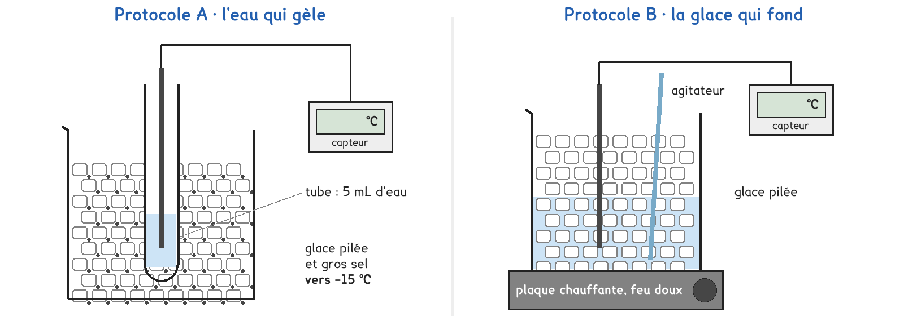
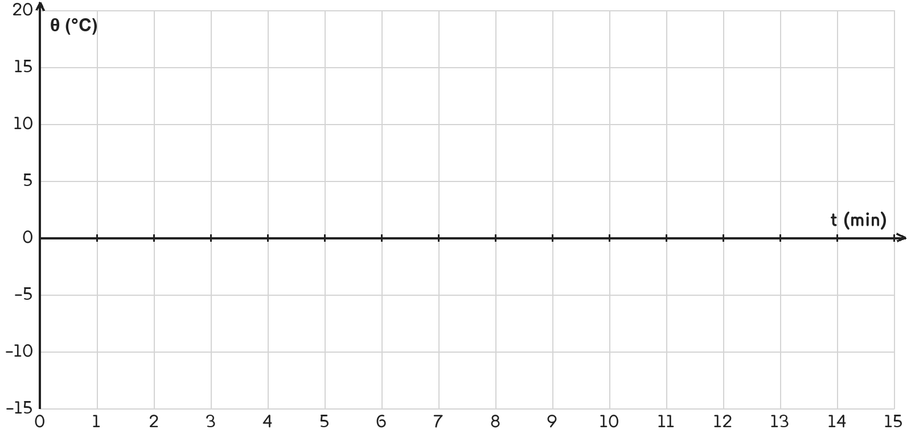

2de Bac Pro · toutes spécialités · TP commun 2DE-06
Pendant que la glace fond, ou que l'eau gèle, sa température change-t-elle ?
2 figures
Sujet. Dans un verre de jus, un glaçon fond doucement. L’hiver, l’eau d’une flaque se change en glace. Dans les deux cas, l’eau change d’état.
Problématique : pendant que la glace fond, ou que l’eau gèle, sa température change-t-elle ?
Au laboratoire, on suit pendant un quart d’heure la température de l’eau qui gèle, ou de la glace qui fond.
a) Nommer chaque changement d’état avec les mots : fusion, solidification.
De solide à liquide, la glace fond : ……………………………………
De liquide à solide, l’eau gèle : ……………………………………
b) Pour suivre l’eau du tube jusque vers −15 °C, au cœur, entourer le bon capteur :
thermomètre médical, 32 à 42 °C · thermomètre infrarouge · sonde, −40 à 125 °C
c) Convertir en kelvins, avec T = θ + 273. Le premier est fait en exemple.
| 0 °C | 20 °C | −15 °C | 100 °C |
|---|---|---|---|
| 273 K | ……………… K | ……………… K | ……………… K |
Une partie de la classe prend A, l’autre B, et on compare les deux courbes à la fin.

Protocole A · l’eau qui gèle. Un tube de 5 mL d’eau plonge dans un mélange de glace pilée et de gros sel, vers −15 °C. La sonde suit l’eau pendant qu’elle se change en glace.
Protocole B · la glace qui fond. Un bécher de glace pilée est chauffé doucement, en agitant. La sonde suit la glace pendant qu’elle fond.
d) Comparer les deux protocoles : entourer la bonne réponse dans chaque case.
| Protocole A | Protocole B | |
|---|---|---|
| Le changement d’état | fusion · solidification | fusion · solidification |
| L’eau reçoit ou perd de l’énergie | reçoit · perd | reçoit · perd |
| Il faut un chauffage | oui · non | oui · non |
Le choix se fait maintenant, avant de toucher au matériel.
e) Quel protocole prenez-vous ? Justifier en une phrase. Le professeur peut vous imposer celui qui reste disponible.
Je prends le protocole ……… parce que ……………………………………………………………………
f) Faire une hypothèse. Pendant que l’eau change d’état, sa température, entourer :
baisse · reste la même · monte
Avant de commencer
Le mélange de glace et de sel descend vers −15 °C : gants obligatoires.
La plaque reste sur feu doux. La sonde ne sert jamais d’agitateur.
g) Avant de lancer la mesure, schématiser votre montage : le récipient, ce qu’il contient, la sonde et son capteur.
Le schéma se dessine sur la feuille du TP.
h) Relever la température θ en degrés Celsius toutes les 30 s, t en minutes.
Si le capteur enregistre seul, recopier ses valeurs dans le tableau.
| t (min) | 0 | 0,5 | 1 | 1,5 | 2 | 2,5 | 3 | 3,5 | 4 | 4,5 | 5 |
|---|---|---|---|---|---|---|---|---|---|---|---|
| θ (°C) | |||||||||||
| t (min) | 5,5 | 6 | 6,5 | 7 | 7,5 | 8 | 8,5 | 9 | 9,5 | 10 | 10,5 |
| θ (°C) | |||||||||||
| t (min) | 11 | 11,5 | 12 | 12,5 | 13 | 13,5 | 14 | 14,5 | 15 | ||
| θ (°C) |
Passer sous 0 °C puis remonter d’un coup, c’est la surfusion : la tracer telle quelle.
i) Tracer la courbe : une croix par relevé, puis relier les croix une à une.

j) Décrire votre courbe en trois morceaux : pour chacun, entourer.
Premier morceau, la température : baisse · reste constante · monte
Deuxième morceau, pendant le changement d’état : baisse · reste constante · monte
Troisième morceau, la température : baisse · reste constante · monte
Température du palier : ……… °C, de t = ……… min à t = ……… min.
k) Un groupe qui a pris l’autre protocole trouve-t-il un palier à la même température ? Votre hypothèse de la question f est-elle confirmée ?
Faire fondre 1 kg de glace demande 334 kJ : E = m × L, avec m en kg et L = 334 kJ/kg.
l) Calculer l’énergie qu’il faut pour faire fondre 200 g de glace pilée.
E = ……………… × ……………… = ……………… kJ
m) Répondre à la problématique en deux phrases.
Ce que ce TP a établi, et qui vaut pour tout corps pur :
À RETENIR
Pendant un changement d’état, la température d’un corps pur ne varie pas : c’est le palier. Pour l’eau, il est à 0 °C, qu’elle gèle ou que la glace fonde.
Pour fondre, la glace reçoit de l’énergie ; pour geler, l’eau en perd. Cette énergie vaut E = m × L : 334 kJ pour fondre 1 kg de glace.
L’eau peut descendre un peu sous 0 °C avant de geler, puis remonter d’un coup à 0 °C : c’est la surfusion.
TP commun de physique-chimie, toutes spécialités. Le travail se fait sur la feuille du TP : cette page en est la version à l'écran, sans les lignes à remplir. Rien n'est enregistré.